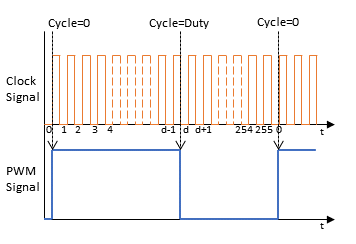

|
Software PWM
1.0
Software PWM for any digital pin
|
|
Software PWM
1.0
Software PWM for any digital pin
|
This library is designed to provide 'software' PWM output for any digital pin.
Important Notes:
The Uno and Nano have 6 hardware PWM pins (3, 5, 6, 9, 10, 11). However, of these pins, the following also have alternative functions:
| Pin | Alternate Use |
|---|---|
| 3 | External Interrupt |
| 5 | - |
| 6 | - |
| 9 | - |
| 10 | SPI SS (default) |
| 11 | SPI MOSI |
So, if the application requires 2 external interrupts and an SPI interface, there are really only 3 PWM hardware signals available for additional control. As an example, for 2 DC motors with a PWM controller, 4 PWM signals are required, so we don't have enough hardware PWM pins to get the job done.
One solution is to change hardware to a processor with more PWM pins. Another is to create a PWM solution that uses software to drive the pins.
This second option is feasible, especially when the PWM signal needed is relatively low frequency. The downside is that the CPU is used process the timer interrupt and toggle the PWM digital output, taking processing time away from other tasks.
The original use case for this library was for PWM speed control of brushed DC motors. The default Arduino Uno/Nano PWM frequency is 490.2 Hz for pins 3, 9, 10, 11 and 976.56 Hz for pins 5 and 6. These frequencies are actually too high to properly drive DC motors at low duty cycles, as the current through the motor coils does not rise fast enough to provide motive force through the motors. See this excellent summary from Adafruit https://learn.adafruit.com/improve-low-speed-performance-of-brushed-dc-motors/pwm-frequency.
This library implements user defined frequency PWM output for any digital pin software limited to MAX_FREQUENCY Hz.
The TIMERn is set for 255 times this frequency (eg, 200Hz becomes 51kHz). This causes the TIMERn interrupt routine to be called 255 times for each PWM cycle and, depending on where it is in the cycle, allows the software to set the digital output pin to LOW or HIGH, thus creating the desired PWM signal. This is illustrated below.

The duty cycle can be changed very smoothly by changing the set point at which the digital transition occurs. The new duty cycle takes effect at the next PWM digital transition.
TIMERn is a global resource, so each object instance of class is driven from the same TIMERn interrupt. The constant MAX_PWM_PIN is used to set limits the global maximum for instances allowed to be processed by the interrupt.
See Also